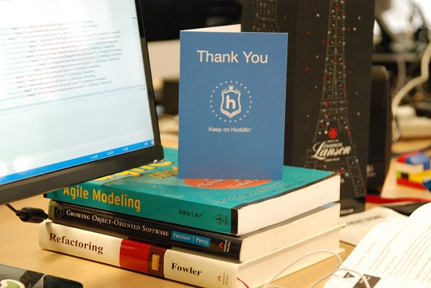

title: Huddle Hackathon: The Hack-Trick date_created: 9th of September 2014 author_name: Jon Finerty description: A roundup of what went on during Huddle’s third annual Hackathon.

tl;dr
A couple of weeks ago we finished running Huddle’s third Hackathon. This is what went on.
Build Up to Building
Running up to the event, Huddlers from 4 different offices and every department pitched over 35 ideas, ranging from ambitious to ingenious (with a dash of ridiculous for flavour). Each idea was submitted in the form of a 2 minute pitch video. Highlights included Micheal Bay-esque explosions, dubstep bass-drops and multiple quadrocopters.
The Product Engineering department then formed teams around their favourite ideas and over three days built some amazing hacks. Pizza was eaten, code was written and prizes were awarded.
You might be wondering why we do this at Huddle? It can’t be cost effective to stop normal work for three days, eat free food and make cool stuff. You can find lists of benefits from doing hackathons all over the internet, so here’s our own. These are a few of the reasons why we continue to do them:
- We get to play with, learn and assess new technology.
- Some of our greatest product features started life as pitch ideas.
- It makes people happier.
- You learn new skills: developers presenting, testers coding etc…
- It mixes up the company and you get to work with new people.
What’s Next
Huddle Hackathons will continue to happen (and historically have been bigger and better each year, so no pressure for 2015…). At the moment we’ve been working on gathering feedback from everyone in Huddle, whether they were involved or not. One of the goals of the Hackathons is for it to be as inclusive as possible, regardless of skill set, department or location. So we will be using this feedback to make next year’s Hackathon even better, for everyone.
